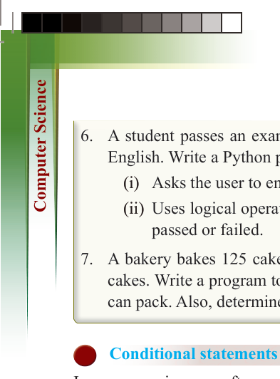
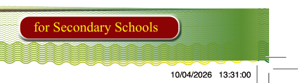
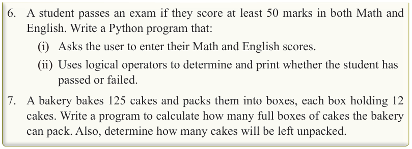
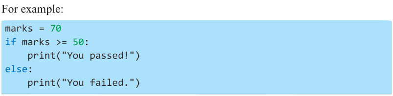
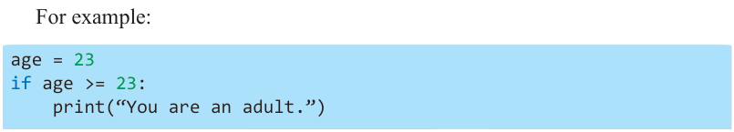

232
for Secondary Schools

6. A student passes an exam if they score at least 50 marks in both Math and
English. Write a Python program that:
(i) Asks the user to enter their Math and English scores.
(ii) Uses logical operators to determine and print whether the student has passed or failed.
7. A bakery bakes 125 cakes and packs them into boxes, each box holding 12 cakes. Write a program to calculate how many full boxes of cakes the bakery can pack. Also, determine how many cakes will be left unpacked.


Conditional statements control flow in Python


In programming, we often need to “make decisions” based on conditions. This is

called “control flow.” In Python, we use “conditional statements” like if, if-else, and


elif to control how a program behaves based on different situations.

Understanding the conditional statement control flow


Control flow helps a program execute different blocks of code depending on conditions.

For example, if a student scores above 50 marks, they pass; otherwise, they fail.

For example:



marks = 70


if marks >= 50:

print("You passed!") else: print("You failed.")
Referring to this code, since the marks are 70 (which is greater than 50), the program will print “You passed!”. If the marks were less than 50, it would print “You failed.” if, if-else, and elif statements
Python has three types of conditional statements:
(i) if statement
This type of statement is used when you only need to check one condition.
For example:

age = 23 if age >= 23:
print(“You are an adult.”)
Referring to this code, if the age is 23 or more, the program prints “You are an adult.”

ComputerScin